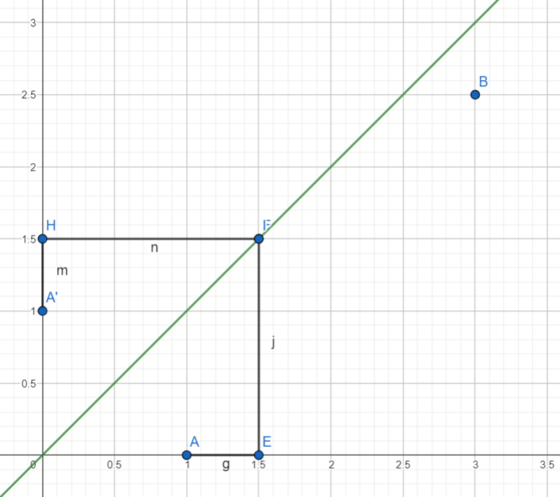
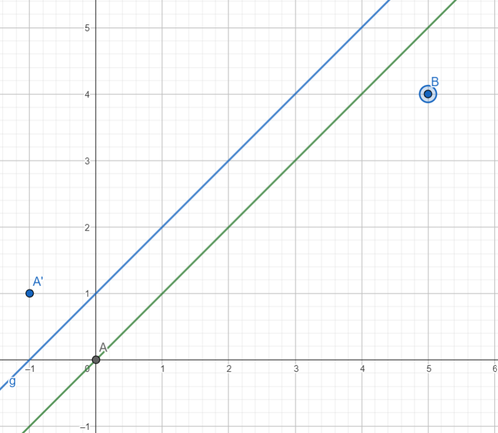

Số Catalan
Chứng minh số 1, sử dụng hình không gian
Giới thiệu về bài toán
Đếm số cách di chuyển từ điểm (0,0) tới (n,m) sao cho không cắt qua đường thẳng y = x, mỗi khi di chuyển chỉ được phép đi đi hoặc sang phải (n>m>0).
Bài toán trên có thể được phát biểu lại như sau
Đếm số xâu nhị phân gồm m bit 1 và n bit 0 (với bit 1 là giá trị đi lên, bit 0 là giá trị sang phải), sao cho số lượng bit 0 luôn lớn hơn số lượng bit 1 trong mọi tiền tố của chuỗi.
Giả sử không có điều kiện, ta xét bài toán trên như sau: Một xâu nhị phân có độ dài m+n trong đó có đúng m bit 1, và kết quả là:
\(\binom{m+n}{m}\) = \(\frac{(m+n)!}{m!n!}\)
Ta có bổ đề sau
Cho A, B cùng phía với đường thẳng d, mọi cách đi từ A đến B cắt qua d bằng với số cách đi từ A' đến B, trong đó A' là điểm đối xứng của A qua d.

Chứng minh
Vì A, B cùng phía với nhau nên mọi đường đi từ A' tới B đều phải cắt d tại 1 điểm, ta gọi điểm đó là F, mọi đường đi từ A đến F (biểu diễn bằng xâu nhị phân) ta đều có thể thu được bằng cách lấy phép phủ định A' đến F và ngược lại.

Quay trở lại bài toán trên, AB không cắt y = x tương đương với việc lấy hiệu của đường đi từ A đến B với số đường đi từ A đến B cắt qua y = x, mà cắt qua y = x tương đương với việc giao cắt qua y = x + 1, và từ A (0,0) ta có thể lấy đối xứng qua được A'(-1,1) do đó kết quả là:
\[ \binom{m+n}{m}\ - \binom{m+n}{m-1} =\frac{(m+n)!}{m!n!} - \frac{(m+n-1)!}{m!(n-1)!} = \frac{n-m+1}{n+1} \binom{m+n}{m} \]
Và khi m = n, ta thu được kết quả rất đẹp:
\[ \frac{1}{n+1} \binom{2n}{n} \]
Đây được gọi là số Catalan.
Chứng minh số 2, sử dụng hàm sinh
Giới thiệu về bài toán
Cho một ma trận \(A \) được tạo thành bởi tích của các ma trận \( A_0, A_1, A_2, A_3 \), vì ma trận có tính chất kết hợp nên có rất nhiều cách để thực hiện, hãy đếm số cách tính A.
Ví dụ: \[ A = A_0(A_1(A_2A_3)) = A_0((A_1A_2)A_3) = (A_0A_1)(A_2A_3) =... \]
Chưa viết xong...